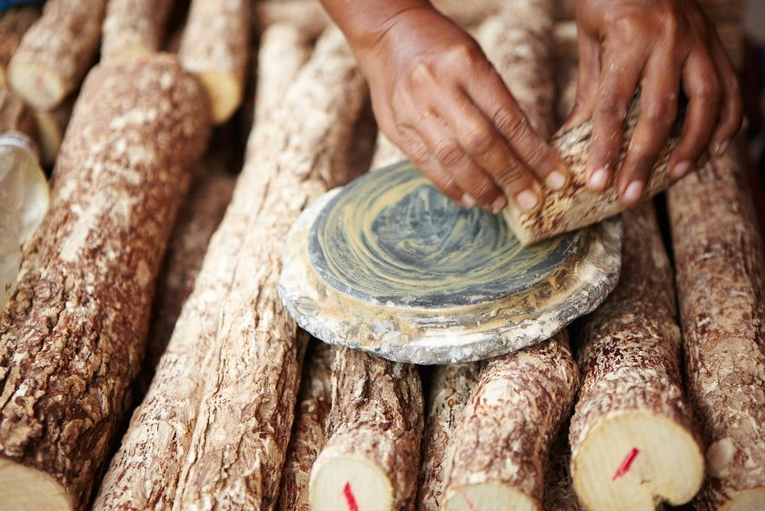
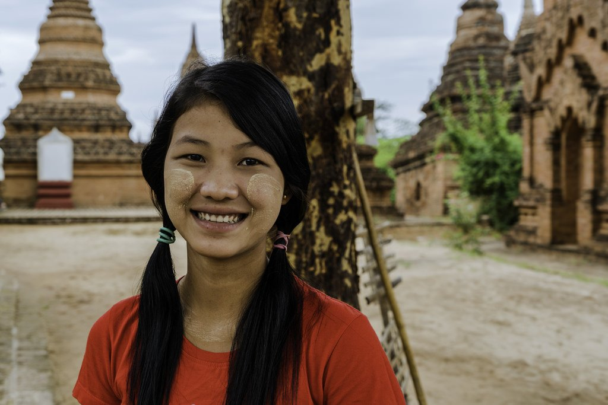

ThanatKharr
Written by U Than Pe ( Tour Guide )

ThanatKharr
Curiosity is the single human emotion pushing the people . It is produstion tourists . They want to see faraway places . They want to hear strange voices . They want to sample unusual food . They want to try on quaint dress . They want to study peculiar customs . They want to watch inexplicable cultural rites and activities . They want to visit offbeat places.
Tourists have been to many countries . They have seen ladies using beauty aids of innumerate kinds .But when they seeMyanmar ladies with Thanakhaa they are genuinelyintrigued . For guides it is a welcome chance . Anything thatinterests tourists is a good subject.It is avery good grist for aguide'smill.
Myanmar have been using thanatkhaa for thousands of years . It is Murrathe ya Exotica for botanists . It grows in the whole country . Drier the region better the quality . The best comes from, driest region near Pakkoku , Shwebo and Ayadaw . In fertile areas it blooms in 4 years . It flower in April-May and fruits ripen in August-September . Its soft bark gives the best thanat khaa paste which is used to cover the skin.
Thanatkhaa branch is cut to the size about 1''to2'' in diameter and 6'' to10'' long . It is ground on a especially prepared grinding stone. It comes invarious sizes . But all are circular pieces of stone with 3 very short legs on lower side . Upper surface has a raised circular center surrounded by a groove . Thanatkhaa wood is firmly held horizontally in fingers of both hands and ground with a circular motion . A little water is sprinkled on the grinding stone . Thanatkhaa bark becomes a think paste and it is applied directly to the skin without any more preparation or addition.
Thanatkhaa is a must for Myanmar woman whatever her age , be it five or eighty-five . Ladies apply it all over their body especially the exposed parts of the skin . Some young girls and youngish ladies make many kinds of leaves flowers or at least a plain round patch of thanatkhaa on both cheeks.
Thanatkhaa has a mild and unobtrusive aroma . Its uncontroversially acceptable scent is appreciated by all people . In olden days boys also applied it on their face especially after dinner and wash it off before breakfast . It makes the skin less oily and protests it from infection . It also offers a good protection from tropical sun . In summer mothers apply thanatkhaa to their infants and toddlers for relief from hot weather.
It is used by all classes of women ; commoner to queen . Myanmar history had only one queen , Shin Tsaw Pu and she used it . If you happen to visit Shwe-maw-daw pagoda in Bago please drop in at the small one-room museum , beside the western(main)entrance . You will find two thanatkhaa grinding stone , one new and the other much used . Even a small part of its groove is broken . That was used by queen Shin Tsaw Pu.
